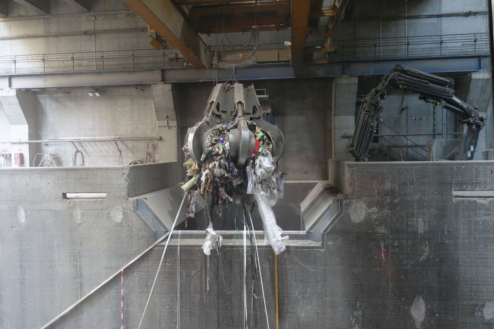
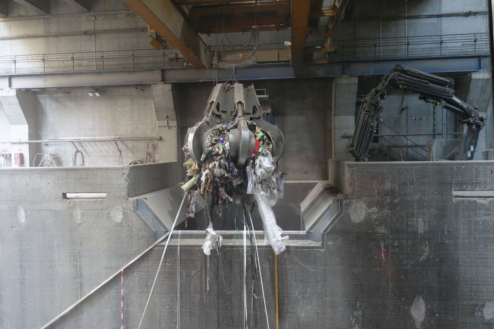
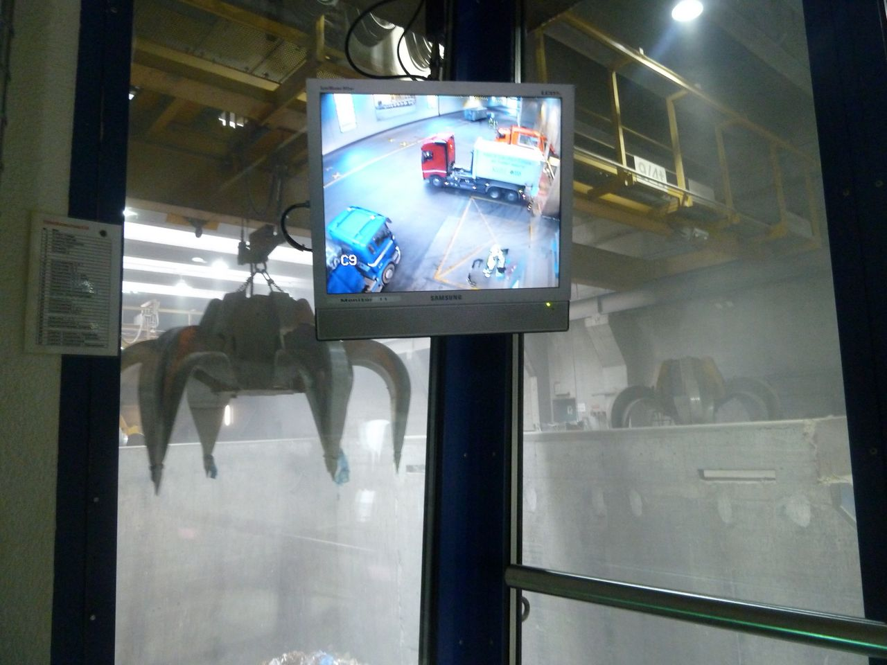
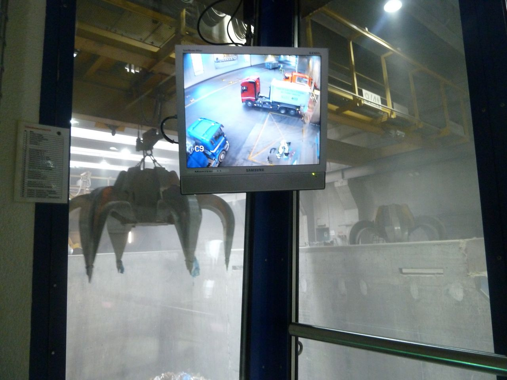

smartphone
object biography
Times of Waste

Slag
After burning in a waste incineration plant, almost a quarter of a filled garbage bag remains left over – most of it is slag (19%). It is not immediately dangerous, but contains toxic heavy metals, especially lead, copper and zinc in considerable quantities. These can be activated by acid rain. Landfills are therefore secured with drainage pipes which are constantly monitored. They run into sewage treatment plants; the heavy metals fall out in the sewage sludge, and then remain in the ash ‘biscuits’ after incineration. This is stored.
In landfills with the most modern scrapping systems, however, most of the metals are extracted, that is about 10% of the slag, of which 2% is non-ferrous metals which may, for example, contain components of smartphones which may have been disposed of in household rubbish. In contrast, metal salts remain behind in the stored slag.
Non-ferrous metals, such as aluminum and heavy metal mixtures (copper, zinc, lead, gold, silver), are refined in the latest processing plants, like those operating at the DHZ AG Lufingen landfill, and are then sold directly to smelters such as Umicore or Aurubis. Slag is big business or as they say in Yorkshire, England “where there’s muck, there’s brass”: since it has about the same copper concentration as copper ore from a mine in the Democratic Republic of Congo, it is considered as “urban mining Eldorado”.
Sources: Discussions with Johannes Allesch KVA Basel (28.9.10.10.11.16), Benjamin Blumer DHZ Lufingen (30.1./7.3.17), Rolf Widmer EMPA (6.3.17); Environmental Report KVA Basel 2016.
 Tübingenextracting
Hobokensmelting
Lufingenlandfilling
Basel/ Elbisgrabenrecycling, aggregating
Oberglattenriching
Tübingenextracting
Hobokensmelting
Lufingenlandfilling
Basel/ Elbisgrabenrecycling, aggregating
Oberglattenriching
Tübingen
A research team in geo-microbiology at the University of Tübingen is working on the extraction of metals from slag left over from waste incineration. They are experimenting with microorganisms from the mining-acidified Rio Tinto in Spain and from a copper-bearing mine area in China. The microorganisms' ability to dissolve and collect metals has been successfully replicated in laboratory conditions to clean slag. The same principle will be used in the future for the recycling of rare earths and other metals. Due to the low prices of raw materials, however, the process has not yet been implemented on a larger industrial scale, as the Tübingen-based Novis GmbH had planned in cooperation with the university.
During our visit to the laboratory, team member Jing He shows us the experimental facilities and their visual documentation of the microorganism samples.
Sources: Skype calls and discussions with the team leader Andreas Kappler (18.10.2016) and Jing He (24.10.2016 / 23.11.2016), University of Tübingen, Germany.


Geo-microbiology Laboratory University of Tübingen, Germany: Andreas Kappler's research team member Jing He extracts metals from slag left over from incineration using microorganisms from the mining-acidified Rio Tinto in Spain and from a copper-bearing mine area in China.


Geo-microbiology Laboratory University of Tübingen, Germany: Microscope images of the metal extraction process from slags, with micro-organisms from the Rio Tinto.
Hoboken
At the Umicore plant in Belgium, slag is generated in the smelting process of smartphones and other e-waste. This is stored in landfills. In Belgium and Holland, slag is used in the construction industry, which is prohibited in Switzerland.
Source: Discussions with Benjamin Blumer DHZ AG Lufingen (30.1.2017 / 7.3.2017)
Lufingen
In Switzerland, about 700,000 tons of slag are produced every year. After the processing in the plant, it is transported to landfills.
In the DHZ AG Lufingen (ZH), the slag is stored in the landfill site for between 3 to 14 days before material processing. Trucks transport it from the compound to the sorting hall, where a Supersort facility divides the materials into four fractions:
- iron scrap
- iron-copper mix
- chrome-nickel-steel mix
- non-ferrous metals: mix of heavy metals and aluminium; heavy metals especially tend to stem from the remnants of cell phone components
The material is transported and sorted on different conveyor belts. The scrapped slag reaches the open air via conveyor belt, and is distributed in the landfill site with trucks and stored in huge piles.
In contrast to the landfill at Elbisgraben BL, all the processes in Lufingen can be carried out on-site: within the complex, all the metallic material is extracted and processed into intermediate products which are not traded. Since the autumn of 2016, such products are processed into pure metals at the Oberglatt metal processing plant and then sold to smelters such as Umicore in Hoboken, Belgium, or to the large, Hamburg-based copper recycler Aurubis.
The slag contains 10% metals (extracts) and 90% bulking agents, that is slag materials that remain in the landfill. This slag contains ashes, mineral components and salts, which is why it has no further use in Switzerland. In Holland and Belgium, however, this material is used due to a shortage of building materials. Of the 10 % metals contained in the slag, 8% are ferrous metals and 2% non-ferrous metals such as copper, lead, chromium, nickel, silver, gold.
Problematic residues from waste incineration or from crematoria and cemeteries (mercury-containing amalgam residues) are not processed in Switzerland. Instead they are transported to special waste or underground landfills such as salt mines in Heilbronn D, where the material is stored at a depth of 800 meters underground.
In the run-off water at landfills, other problems occur, such as the presence of ammonium. The pollutants could be eliminated with active-carbon filtration, but the public sector has no economic interest in landfills cleaning the polluted water themselves.
The problem of heavy metals being dissolved by acid rain is regarded by the landfill business as a negligible occurrence: legislation determines that slag may have a 1% metal content; in Lufingen this ratio amounts to 0.5%, which is negligible in relation to the amount of slag that is delivered and landfilled. The Department of the Environment and Energy considers heavy metals such as arsenic, mercury, lead etc. in the slag to be problematic in that they can be dissolved again by acid rain – and rain is often acidic today: put simply, acidic liquids can mobilize these toxic substances.
The fact that not all waste-to-energy plants (WtE) are equipped with radioactive locks, is considered by landfill operators as an unsolved problem – the dials of old clocks could be incinerated and then end up in the slag. Solid municipal waste at incineration plants is also less closely monitored than, for example, materials from the dismantling of buildings (asbestos, PCB, etc.). While large companies cooperate with ecological advisors for contaminated sites, this is hardly financially manageable for smaller demolition work.
Sources: Discussions with Benjamin Blumer DHZ AG Lufingen (30.1./7.3.2017); Timo Weber Office for Environment and Energy BS (19.1.2017)


Slag dump DHZ AG Lufingen, Switzerland: Metal-deprived slag processed by the Supersort® processing plant for landfill.
Soundscape of the slag dump DHZ AG Lufingen and metal finishing Oberglatt, Switzerland (2:20).
Basel/Elbisgraben
Waste-to-energy plant Basel & landfill Elbisgraben
Swiss people produced about 720 kg of household waste per person in 2016, of which about half was collected and recycled separately. Although Switzerland has one of the best waste systems worldwide, almost a quarter of a filled garbage bag remains in the waste incineration plant after incineration. Of this, around 4% is highly toxic and is stored in national or international underground landfills: the mercury-containing electro-filter dust that is produced in the flue gas systems, as well as filter cakes which are retained in the wastewater filters of the plant.
Since the year 2000 neither waste nor rubbish may be landfilled in Switzerland, but must be burned in suitable facilities. Today, the combustion processes are technologically optimized so that no dioxins are produced.
The waste-to-energy plant in Basel (WtE) was put into operation in 1999. Every year, around 220,000 tonnes of waste are incinerated and heat, steam and electricity are produced. The energy extraction efficiency is around 75%. The everyday waste contains about 8,000 tonnes of toxic waste which has to be stored in hazardous waste landfills.
Johannes Allesch accompanied us on our research tours through the WtE. Together with him, Hanspeter Geugelin and other employees, we have developed methods for visual recordings with GoPro cameras, especially perspective views of the garbage and slag crane.
The incineration processes create slag. This is stored, for example, in the landfill Elbisgraben (Basel-Landschaft). It also contains a small amount of about 10% metals. The non-ferrous metals (about 2%) can be extracted with the latest technologies such as eddy current separators. Since the landfill currently has no such facility – the acquisition is planned for 2018 – the slag is stored separately until it is scrapped.
Heinz Schaub and Pablo Schori familiarized us with the processes of the slag dump and guided us through various areas of the landfill for the sound and image recordings.
Sources: discussions in the WtE Basel with Johannes Allesch & Hanspeter Geugelin (28.9.2016 / 10.11.2016) and in the landfill Elbisgraben with Heinz Schaub & Pablo Schori (15.12.2016); Environmental Report WtE Basel 2016; Department for the Environment Waste Statistics 2017.


 

 



Waste-to-energy plant Basel, Switzerland: Processing of household waste to slag
Soundscape for the Waste-to-Energy Plant Basel, Switzerland (2:19).
Processing of household, industrial and commercial waste at the Waste-to-Energy Plant Basel, Switzerland (2:52).


Landfill Elbisgraben Basel-Landschaft, Switzerland: delivery of slag materials from WtE Basel; Extraction of metals and dumping of purified slag.
Soundscape to the slag dump Elbisgraben Basel-Landschaft, Switzerland (1:35).
Oberglatt
Metal finishing plant Oberglatt
Since autumn 2016, the aluminium-heavy-metal mix sorted out of the slag has been further processed into intermediate products at the metal finishing plant in Oberglatt and then into pure metals. Their own laboratory monitors these finishing processes. The metals are sold to smelters such as Umicore in Hoboken, Belgium, or Hamburg-based copper recycler Aurubis.
The materials are separated based on size by vibration equipment. One proportion is aluminium (over 95% pure aluminium), which is sold to aluminium works. A second proportion is heavy metals such as copper, lead, zinc, brass, silver and gold, which are purchased by copper works or smelters.
Big Bags are filled with aluminium and heavy metals for deliveries. The dust accumulated during the processing is collected in a large container and disposed of by lorry.
The prices of traded metals fall in the range of silver and gold prices, as these are included in the products. When negotiating prices, retailers argue over the ‘impurities’ of products to drive the price down. Where possible, DHZ Lufingen develops contacts at copper smelting plants, and so on, who can negotiate prices. What is important are long-term relationships and mutual trust, as well as – due to price fluctuations – permanent delivery options. Commerce is a male domain; few women are involved in these processes.
The sale of these extracts, which make up 10% of the materials, subsidizes the expenses of the landfill.
Source: conversations with Benjamin Blumer DHZ AG Lufingen (30.1.2017 / 7.3.2017)
What remains from the recycling of waste: Material processing in the slag landfill DHZ AG Lufingen and metal refining in Oberglatt, Switzerland (1:17).


Further processing of the aluminium-heavy-metal mix sorted out of the slag of the landfill Lufingen in the metal finishing plant Oberglatt, to intermediates and subsequently to pure metals.